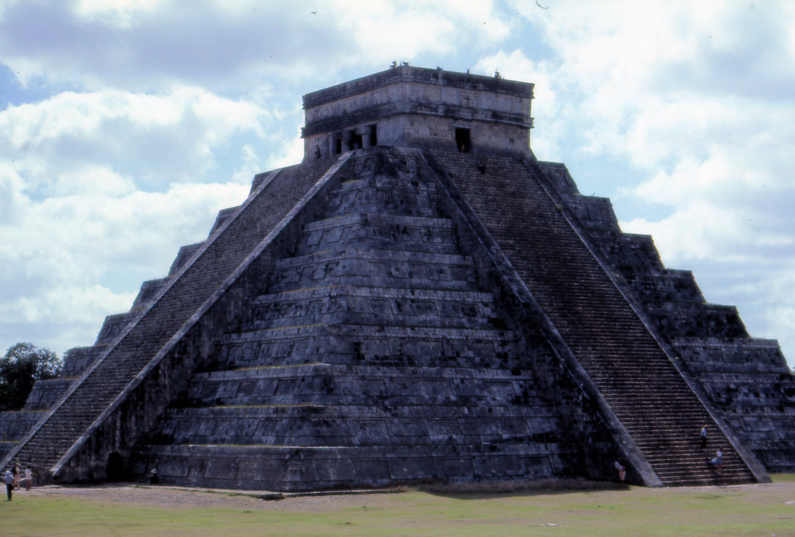
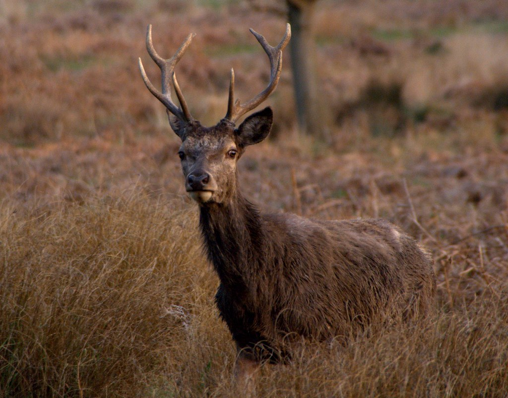
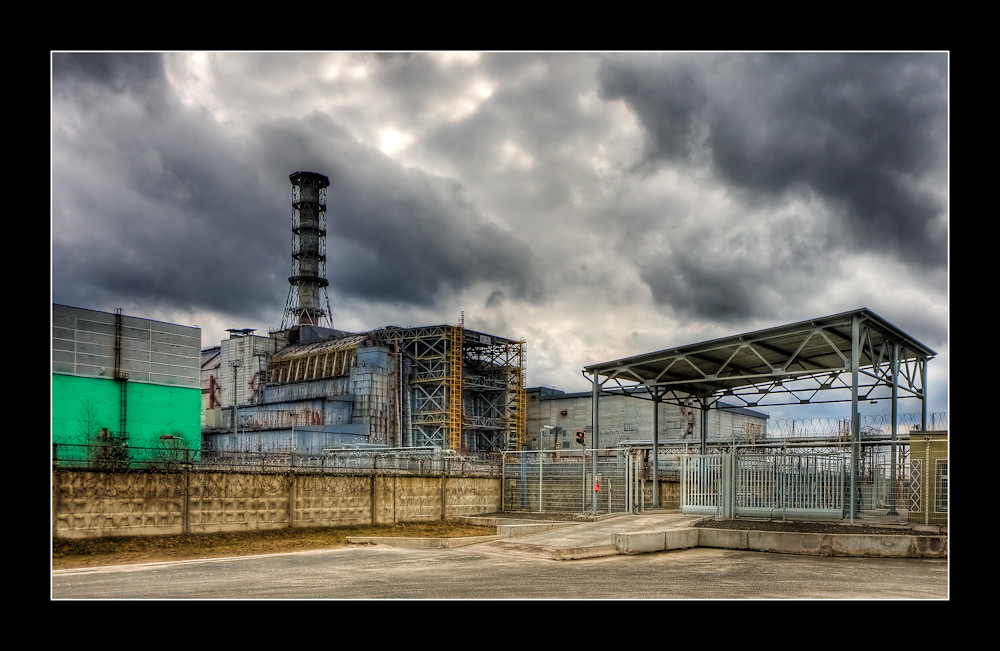

We're looking for a new world...
Have you recently happened upon terra incognita during your exploratory voyages?
Well you're in the right place, champ.

What did you find while you were there?



Weird Plants?
Indigenous People?
Exotic Animals?
Plutonium Deposits?
Most explorers have a great affinity for finding land. Yet, they often find themselves derelict when it comes to the *monetization* of their discoveries. Some even suffer a strange maritime malady which causes them to believe that the new land should be held in common or left in the hands of native peoples (preposterous!). Here at G.U.Y.M. we violently dispel that notion.
-Our founder, Rupert Chatham Blunderbuss IV
Don't worry exiled royalty!
We're more than happy to restore you to your throne
if you agree to operating as a puppet state...